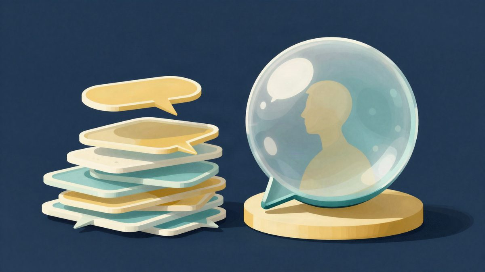

Apple je počeo skenirati iPhone u zatvorenoj kutiji prije povrata

Apple je, prema Marku Gurmanu iz Bloomberga, počeo koristiti uređaj koji provjerava iPhone dok je još u zatvorenoj kutiji. Time želi smanjiti prijevare s povratima i brže vratiti ispravne uređaje u prodaju. Još nije objavljeno kako sustav točno radi ni gdje je već aktivan.
Apple je počeo slati svojim maloprodajnim trgovinama poseban uređaj koji može skenirati iPhone i napraviti dijagnostiku dok je uređaj još u zatvorenoj kutiji, navodi Mark Gurman iz Bloomberga. Time se, prema njegovu opisu, može provjeriti je li telefon stvarno u pakiranju, bez otvaranja kutije pri povratu.
Razlog je rast broja pokušaja prijevare. Gurman piše da neki kupci pokušavaju vratiti praznu zapakiranu kutiju ili uređaj iz kojeg su uklonjeni unutarnji dijelovi. Prema njegovu opisu, Apple je dosad zaposlenicima davao upute da pri povratu iPhonea otvore kutiju i provjere sadržaj, kako bi se otkrili takvi slučajevi.
Novo rješenje smanjuje potrebu za ručnom provjerom. Ako je uređaj u redu, trgovina ga može odmah vratiti u prodaju. To znači da se ispravno vraćen uređaj može odmah vratiti u prodaju.
Gurman navodi i da je Apple počeo isporučivati taj uređaj trgovinama početkom ovog mjeseca. U izvješću nije navedeno kako točno sustav radi, niti u kojim je trgovinama već aktivan. Također nije objavljeno koliko takvih uređaja Apple planira postaviti u mrežu svojih prodajnih mjesta.
Riječ je o još jednom koraku u kontroli povrata za hardver visoke vrijednosti. Informacije o sustavu dolaze iz Gurmanova izvještaja.
Izvor: 3DNews
Povezani članci

Studija: ChatGPT je kod 65 korisnika zabilježio 2.050 memorijskih zapisa25. listopada 2026. iPhone Duo: prvi korisnici prijavljuju puknuća zaslona uz šarku na dan prodaje23. listopada 2026.
iPhone Duo: prvi korisnici prijavljuju puknuća zaslona uz šarku na dan prodaje23. listopada 2026. Samsung, Vizio i Roku: televizori kontaktiraju ACR servere i nakon isključivanja praćenja22. listopada 2026.
Samsung, Vizio i Roku: televizori kontaktiraju ACR servere i nakon isključivanja praćenja22. listopada 2026.